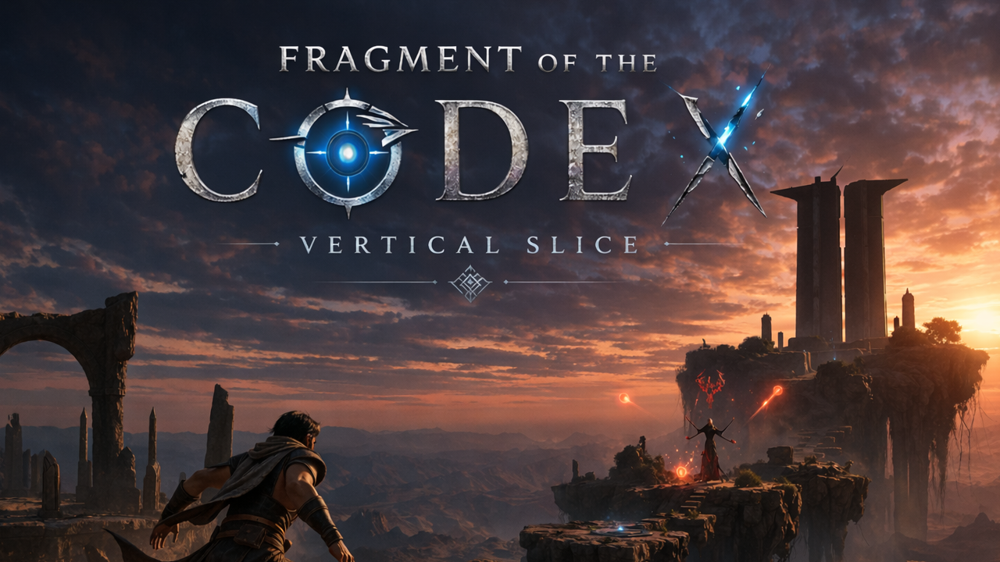

FRAGMENT OF THE CODEX
Journey through a fractured world
Project overview
Fragment of the CodeX is a third-person dark-fantasy action-adventure Soulslike developed in Unreal Engine 5 under Nitrous Studio.
Set within a fractured world, the game brings together interconnected environments, expressive melee combat and encounters against powerful champions. Its gameplay combines deliberate weapon-based combat with distinct abilities such as Shadow Strike and weapon attunements.
At its core is a Blueprint-first, component-based gameplay architecture, designed to support reusable combat systems, enemy and boss behaviors, world traversal and progression. The project is both a playable experience and an ongoing exploration of scalable gameplay engineering.
My contributions
My work spans the design and implementation of the gameplay framework as well as its integration into an authored game experience:
- Stack-based boss state machines, attack sequencing and encounter orchestration.
- Enemy awareness, Behavior Trees, melee and ranged behaviors, and group combat coordination.
- Player combat styles, animation-driven actions, defensive mechanics and Shadow Strike.
- Interconnected level layouts, traversal systems, checkpoints and cinematic transitions.
- Data-driven inventory, equipment, weapon switching and runtime stat integration.
- UMG interfaces, character and weapon previews, HUD and gameplay feedback.
Gameplay & Technical Systems
A closer look at the gameplay architecture, encounter systems and world design behind Fragment of the CodeX.
Combat AI & Boss Architecture
Two complementary AI architectures support authored boss encounters and reactive enemies within a shared combat framework.
Stack-Based Boss State Machine
The boss framework uses BP_BaseBoss, BPI_BossState and reusable state objects derived from BP_BossStateBase. A stack-based FSM separates attack sequences and state transitions from the boss character's core responsibilities.
Boss-specific states can be combined with shared behaviors, allowing distinct movesets without rebuilding the underlying state machine for each encounter.
Boss Director & Encounter Lifecycle
The Director and Metrics components separate orchestration and runtime combat information from individual attack implementations. Attack animations, damage windows, movement and effects are coordinated with an encounter lifecycle that includes introduction, activation and fog-gate traversal.
Behavior Trees & Group Combat
Regular enemies use Unreal's Behavior Trees and Blackboard data for reactive decision-making. Awareness, patrol, pursuit and combat behaviors are separated from attack execution, while group coordination limits simultaneous attackers to improve encounter readability.
Level Design & World Architecture
The world is designed as a sequence of interconnected spaces where exploration, verticality and enemy placement shape the rhythm of combat.
Interconnected Level Design
Modular environments are assembled around deliberate sightlines, elevation changes, branching paths and encounter spaces. Resting sites and planned shortcuts structure progression and create a recognizable sense of place.
The Ashen Keep layout explores these principles through a castle approach, lower ward, courtyard, ramparts and an upper keep leading toward a boss arena.
World Partition & Spatial Streaming
The earlier Unreal vertical slice used World Partition to organize large environments into streamable sections. This provides an engine-level foundation for loading spatial content independently of the authored progression through a level.
Traversal & World Transitions
Reusable traversal devices, teleporter interactions and cinematic controllers connect exploration with encounter entrances. Checkpoints, resting interactions and transition effects help maintain continuity between traversal, combat and recovery.

Data-Driven Equipment & Inventory
A component-based item framework separates item ownership, equipment assignments, runtime gameplay effects and user interface presentation.
Data Assets & Gameplay Tags
Item identities and metadata are defined in a Data Table, with typed Data Assets supplying category-specific properties. AC_InventoryComponent manages owned items and quantities, while AC_EquipmentComponent resolves assignments through Gameplay Tag slots mapped to ItemIDs.
Weapon Kits & Runtime Integration
Primary and Secondary assignments are independent from the active weapon. Changing the active kit triggers an event-driven update of weapon actors, combat styles, animation sets and resolved stats. Sword-and-shield, Katana and Twinblade kits share the same equipment contract.
The system is being refined around a curated loadout of complete outfits, passive talismans, global attunements and recovery items rather than a large attribute-allocation system.
UMG & Real-Time Previews
Character and weapon previews bring the equipment data into the interface through dedicated preview actors and render targets. The menu consumes the same inventory and equipment state as gameplay, rather than maintaining an independent loadout.
Building a cohesive gameplay experience.
Fragment of the CodeX brings together reusable gameplay architecture, authored encounters and world design within a single action-adventure experience. Development continues with a focus on combat expression, technical consistency and presentation.